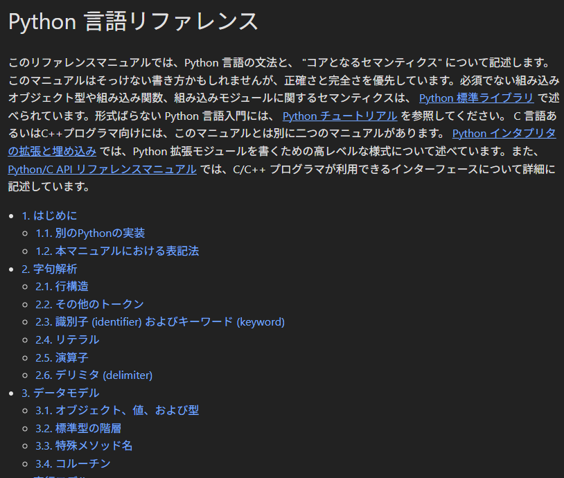
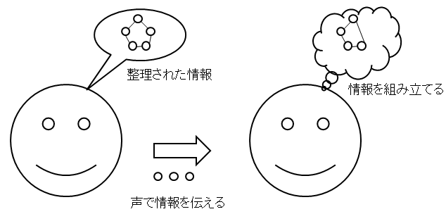
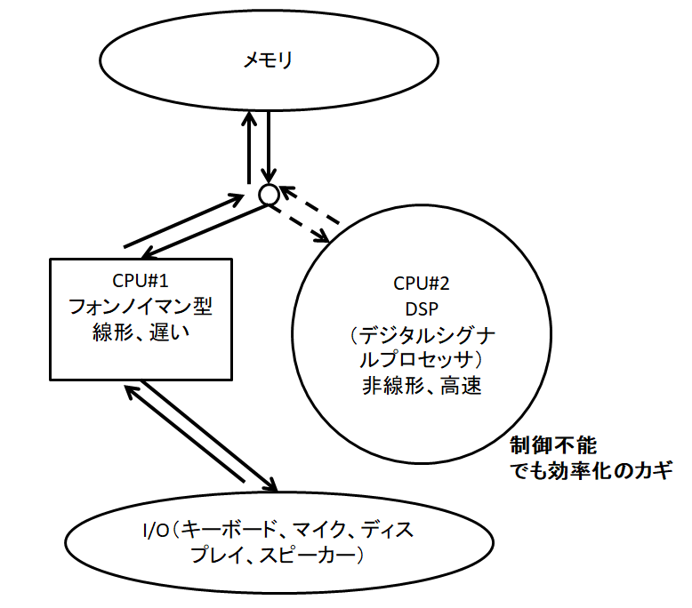

1. 知的生産サイクルとPython/生成AI
2. 目次
- 自己紹介
- 背景
- 目的
- 情報収集のコツ
- 抽象化（理解）のコツ
- 抽象化で重要だと考えるLモードとRモード
- Rモードの活用方法
- 検証
- 余談：listとtupleの違い
- 余談：listのメソッド
- 余談：tupleのメソッド
- 余談：アンダースコアで囲まれた属性って何？
- 生成AIの活用
- タスク管理と時間配分
- まとめ
3. 自己紹介
- 氏名：さんのみや
- 職業：土木系エンジニア
- 業務
- WebGISアプリ開発（インフラ担当、折衝担当）
- 流体の研究開発（道路排水、開水路流れ、流体解析、V&V）
- 雑務も色々
- 研究×業務×家庭
4. 背景
- 背景として、「研究開発を進めさせてくれ」と嘆きたくなる場面が増えてきた。
- 使える時間、時間当たりの効率（パフォーマンス）、自分の集中力の限界と向き合う必要がある。
- 「エンジニアの知的生産術」「リファクタリングウェットウェア」の二冊を読んでまとめた。
5. 目的
- 「知的生産とはなにか」
- 知的生産とは：知識を活用し、新しい価値を生み出すこと
- 「知的生産のサイクルに着目して、タスク管理に活かすこと」
- 情報収集（インプット）
- 抽象化（理解・構造化）
- 検証（実践・アウトプット）
- 再び情報収集へ
6. 情報収集のコツ
- まず生成AI（ChatGPT）に聞け
- 欲しい情報だけ取る「つまみ食い」でもよい。
- 遅延評価的に、あとからその周辺を学ぶ
- 目次から構造を把握、「キーワードに疑問を持つ」。
- 詳細を読む。時間を決めて何回も読む。思い出す。
- 理解が難しいなら、片っ端から読む、プログラムを写経するでもよい。

図1: Python言語リファレンスのスクショ
7. 抽象化（理解）のコツ
- 自分の言葉で整理する。
- 目次で構造を理解して、それぞれ何も見ずにイメージ・説明できるレベル
- 新しい知識の習得には時間かかる。速読は無理。
- 自分の目的「どんな場面で使えるか」を考える

図2: 構造化して整理された情報を組み立てるのには時間がかかるといいたい。
8. 抽象化で重要だと考えるLモードとRモード
- CPU#1：フォンノイマン型（線形・遅い）
- Lモード=人間が意識して論理的に考えるプロセス。手順的で、時間がかかるけど制御できる。
- CPU#2：DSP（非線形・高速）
- Rモード=無意識的な連想・ひらめき・パターン処理。速いけど「自分で制御できない」。
- メモリ
- 意識に上げられる情報量。CPU#1とCPU#2のやりとりの結果がここに現れる。

図3: LモードとRモード（議論を醸す図）
9. Rモードの活用方法
- モーニングページ（朝起きてすぐに3ページ思いついたことを書け）
- 一旦問題から離れることで脳が勝手に整理する。
- 本は概要だけ掴んで、後で再読→勝手に脳内で整理されて、呼び起こすことで記憶が強化される。
10. 検証
「作って動かす」
- プログラムならコードを書いて実行
- 研究なら、実験・数値解析で検証
- アウトプットすることで理解が定着する。
a = [1, 2, 3] a.append(4) b = (1, 2, 3) b.append(4) # AttributeError
11. 余談：listとtupleの違い
| list | tuple | |
|---|---|---|
| 可変性 | 可変 | 不変 |
| メソッド | append, extend … | count, index |
12. 余談：listのメソッド
- メソッドとは「オブジェクトに紐付いた関数」
dir(list) ['__add__', '__class__', '__class_getitem__', '__contains__', '__delattr__', '__delitem__', '__dir__', '__doc__', '__eq__', '__format__', '__ge__', '__getattribute__', '__getitem__', '__gt__', '__hash__', '__iadd__', '__imul__', '__init__', '__init_subclass__', '__iter__', '__le__', '__len__', '__lt__', '__mul__', '__ne__', '__new__', '__reduce__', '__reduce_ex__', '__repr__', '__reversed__', '__rmul__', '__setattr__', '__setitem__', '__sizeof__', '__str__', '__subclasshook__', 'append', 'clear', 'copy', 'count', 'extend', 'index', 'insert', 'pop', 'remove', 'reverse', 'sort']
13. 余談：tupleのメソッド
- tupleにappendメソッドは存在しない
dir(tuple) ['__add__', '__class__', '__class_getitem__', '__contains__', '__delattr__', '__dir__', '__doc__', '__eq__', '__format__', '__ge__', '__getattribute__', '__getitem__', '__getnewargs__', '__gt__', '__hash__', '__init__', '__init_subclass__', '__iter__', '__le__', '__len__', '__lt__', '__mul__', '__ne__', '__new__', '__reduce__', '__reduce_ex__', '__repr__', '__rmul__', '__setattr__', '__sizeof__', '__str__', '__subclasshook__', 'count', 'index']
14. 余談：アンダースコアで囲まれた属性って何？
a = [1, 2] b = [3, 4] print(a + b) [1, 2, 3, 4] print(a.__add__(b)) [1, 2, 3, 4]
15. 生成AIの活用
- 情報収集を爆速化できる
- 鵜呑みは危険（必ず、検証を自分で行う）
- つまり 情報収集 → 抽象化 → 検証のサイクルをアシストする装置
16. タスク管理と時間配分
- ステークホルダーや家庭状況でタスク優先度は変化する、最適解はない。
- 判断基準を「自分が後悔しないライン」として納得解にする
- 集中力の必要なタスクを朝に持ってくる。ポモドーロタイマーで時間を区切る。
- 「完璧を目指さない」（手を抜くではない）
17. まとめ
- 知的生産サイクルを意識することで学びが深まる
- Pythonは「コードで検証できる」ので知的生産に向いている
- 生成AIはサイクルを速く回す強力な道具
- でも理解（抽象化）は時間がかかるボトルネックなので、朝に持ってくる。